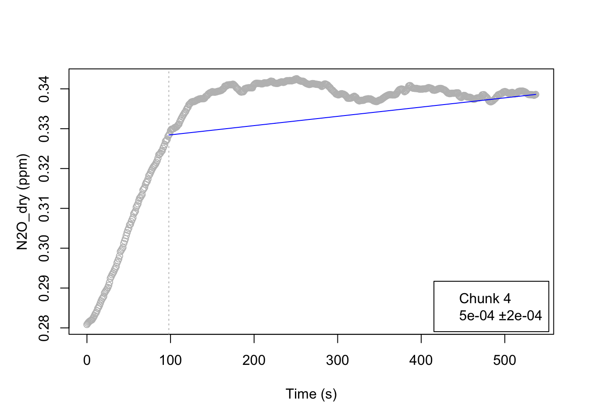

ChamberFlux (working title)
An adapted version of the R package “RespChamberFlux” to calculate gas fluxes measured with the PICARRO system (SUBTITLE TO BE ADAPTED)”
Introduction
Background and Challenges
[Broad overview about gas flux measurements in general] Measuring gas fluxes in a chamber provides useful information on plant-atmosphere interactions and processes (e.g. REF). However, each measurement includes systematic and random errors (e.g. Pérez-Priego et al. (2015))
The package RespChamberFlux (Wutzler and Priego (2024)) derives fluxes from a time series of gas concentrations in a chamber. It has been successfully used in past studies (O. Perez-Priego et al. (2015),Oscar Perez-Priego (2021)) for chamber measurements with a LI-840 infrared gas analyzer (IRGA LI-840, Lincoln, NE, USA) system. The chambers were equipped with different sensors to acquire environmental variables, and specifically the gases CO2 and H2O.
[Quickly introduce Picarro system]: The Picarro system (REF) has been used for various gas flux measurements for various settings, including field campaigns executed by the Agronomy Department of the University of Córdoba, Spain (ADD REFS TO STUDIES). An advantage of the Picarro system is that it can measure a broad range of gases from a chamber, including CO2, H2O, N2O, NH3, AND CH4. However, various environmental variables, including Temperature, Atmospheric Pressure, relative humidity, and shortwave radiation were not measured during the above mentionend campaigns.
To our knowledge, no evaluation of the measurement times needed for each gas to minimize systematic and aleatory errors, exists.
Aims and structure of this article
In this article, we present [NEWPACKAGENAME] that builds on the R (R Core Team (2024)) package RespChamberFlux (Wutzler and Priego (2024)), suited for the use with the Picarro system (Reference). We demonstrate the use of the package for Picarro measurement data from two case studies located in Córdoba, Spain (ADD STUDY SITE FIGURE) with different aims. Furthermore, we systematically test the gas-specific measurement times in the Picarro system that are needed in order to minimize the measurement error. Based on our findings, we provide recommendations for minimizing systematic and random errors when measuring with the Picarro system.
RespChamberProc
To provide the reader with the necessary background how RespChamberProc (Wutzler and Priego (2024)) works, a quick overview of RespChamberFlux is provided in the following. As stated above, the package was developed to compute the fluxes and to estimate the associated errors for gases for a chamber. Generally, the package performs the following steps:
- data loading
- corrections of units and gas densities (Gases have to be in dry mole fractions)
- identification of single measurement chunks (labelled with an index variable)
- estimation of the fluxes and their respective errors
For [NEWPACKAGENAME], the here presented Picarro-adapted version of RespChamberProc, we demonstrate each of these steps based on example data in the results section.
Methodology
All calculations in this article are executed using R Statistical Software version 4.4.0 (R Core Team (2024)).
Adapting RespChamberProc to use with the Picarro system
We extended the package RespChamberFlux (Wutzler and Priego (2024)) by various functionalities:
- Time intervals in the raw data from Picarro are irregular \(\rightarrow\) convertToRegularTimesteps
- A function was implemented that downloads additional environmental parameters automatically for selected coordinates using the packages “openmeteo” (Pisel (2023)) and “elevatr” (Hollister et al. (2023)).
Analyzing the gas-specific measurement times needed for error minimization
We analyze the gas-specific measurement times that are needed for the used set-up in order to minimize the errors by [create plots!] ======= ## Background
- gas flux measurements
- Picarro
Aims and structure of this article
In this article, we present [NEWPACKAGENAME], which is an adapted version of the R (R Core Team (2024)) package RespChamberFlux (Wutzler and Priego (2024)), suited for the use with the Picarro system (Reference) that measures the flux of various gases, including CO2, H2O, N2O, NH3, AND CH4.
We demonstrate the use of the package with data from a case study located in Córdoba, Spain (ADD STUDY SITE FIGURE).
Methodology
All calculations were done using R Statistical Software version 4.4.0 (R Core Team (2024)).
We extended the package RespChamberFlux (Wutzler and Priego (2024)) by various functions…
Results
======= #| label: compute-fluxes #| eval: false
Case study: Data Jesus (HOW IS THE STUDY SITE CALLED?)
Overview of the measurement data
The entire time series of the Picarro measurement data on 31/05/2022 for the study site XXX (REF to figure studysite) are shown in Figure 1.
Case study: Data Jesus
Overview of the measurement data
First, the time series of the Picarro measurement data on 31/05/2022 for the study site XXX (REF to figure studysite) is shown (Figure 1).
The function subsetContiguousfrom RespChamberProc subsets the entire time series into chunks that are identified by an index variable, here termed “Collar”.
The function calcClosedChamberFlux from RespChamberProc calculates the chamber flux for various gases and estimates the best fit, as shown in Figure 3 for chunk ‘4’

The function calcClosedChamberFlux from RespChamberProc calculates the chamber flux for various gases and provides the best fit, as shown in Figure 3 for chunk ‘4’